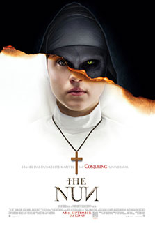
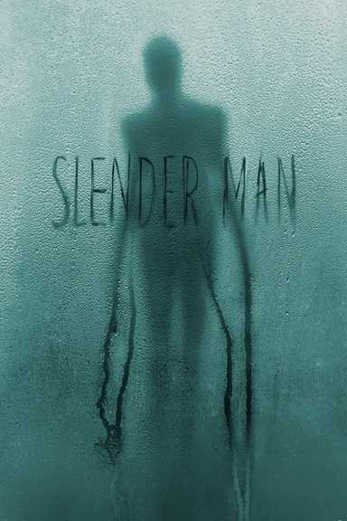
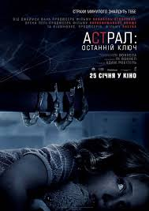

Монахиня

- Назва: The Nun / Проклятие монахини
- Режисер: Корін Гарді
- Актори: Таісса Фарміга, Бонні Ааронс, Деміан Бішир, Інгрід Бісу, Шарлотта Гоуп, Йонас Блоке, Джонатан Койн, Лілі Бордан, Сандра Роско, Лідія Коротько
- Студія: Warner Bros. Pictures, New Line Cinema, Atomic Monster
- Прем’єра: 05.09.2018
- Тривалість: 96 хв
Опис:
Ця історія сталася вельми давно. Серед лісів і гір загадкової Румунії стоїть самотній монастир, де відбуваються страшні події. Одна з черниць вчинила жахливий гріх – вона покінчила життя самогубством. Тепер її дух буде бродити монастирем і забирати до себе інші невинні душі. Розслідувати цю справу з самого Ватикану відправили священика з не найкращою репутацією та молоду послушницю, якій ця сама черниця не раз приходила у видіннях. Після прибуття вони розуміють, що цей замок у Румунії сповнений злих духів. Знайшовши на одних із дверей видряпаний напис "Тут закінчується Бог", починаєш розуміти, що не тільки життя, а й віра людей пройде нелегке випробування.
Слендермен

- Назва: Слендермен / Slender Man
- Режисер: Сільвен Уайт
- Актори: Джої Кінг, Жасмін Сабіно, Анналіса Бассо, Хав'єр Ботет, Кевін Чепмен
- Студія: Sony Pictures
- Прем’єра: 22.08.2018
- Тривалість: 93 хв
- Назва: Астрал: Останній ключ / Insidious: Chapter 4
- Режисер: Адам Робітел
- Актори: Лін Шей, Лі Воннелл, Енґус Семпсон, Кірк Асеведо, Спенсер Лок, Джош Стюарт, Брюс Девісон, Хав'єр Ботет, Маркус Хендерсон, Гана Гейєс
- Студія: Entertainment One, Stage 6 Films, Blumhouse Productions
- Бюджет: 10 млн. дол. США
- Прем’єра: 03.01.2018
- Тривалість: 103 хв
Опис:
Люди ніколи не пропадають просто так. За їх зникненням завжди щось стоїть. Наприклад якийсь страшний монстр, який отримує задоволення від мук нікчемних людей. Слендермен завжди поруч. Він як хвороба – проникає в голови своїх жертв, знищуючи їх зсередини. Він завжди в похоронному костюмі, ніхто ніколи не бачив його обличчя та нічого хорошого Слендермен не несе. Його довгі худорляві руки дістануть кожного. Саме через нього пропали десятки, сотні, а то й тисячі дітей і підлітків. Багато хто намагався від нього сховатися, але рано чи пізно кожен зникне безвісти.
Астрал: Останній ключ

Опис:
Парапсихолог доктор Еліс Рейньєр уже давно здобула популярність як людина, яка вміє спілкуватися з істотами з потойбічного світу. Якщо в будинку діється щось неймовірне, люди знають, що жінка може допомогти. Один чоловік зі своєю сім'єю зовсім нещодавно оселився в будинку в містечку Файв-Кіс, штат Нью-Мексико. Як виявилося, це те саме місце, де Еліс колись жила. Так збувається її найбільший страх – тварі з паралельного світу проникають у її будинок, у її життя. Вона повинна побороти всі свої страхи і подолати жахливі суті, поки ті повністю не оволоділи всім, що дороге Еліс.